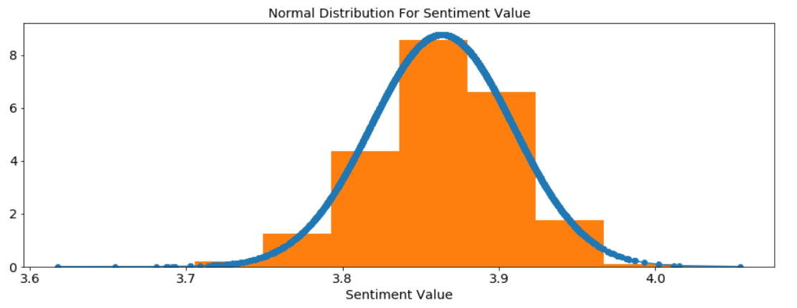
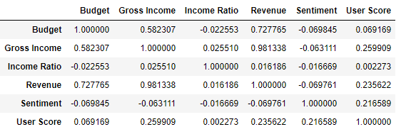

Table of contents
- Project Goal & Dataset
- Network Analysis
- Highest Income Actor-Pair
- Attribute Correlations
- Review Analysis
- Conlusion
Dataset
Get Data
We've decided to look at movie data. In regards to doing this, we started by looking at IMDB's data on movies. From them we downloaded a list of all their movies. This summed up to a total of 4,5 million movies/TV shows/short/video etc, etc, etc.... Using regular expressions we removed everything we didn't want, so we only had Movies left. This left us with a total of 300.000 different movies. Since IMDB only gave us titles, runtime and score, we needed to find more information in other places. So we went to https://www.themoviedb.org/. They gave us everything we needed to make our analysis. From them we downloaded Json files on our movies, which also contained some specific information. This left us with 4.500 movies. These are then the movies we worked with.
We chose this data because we would like to work with movies and figure out different things and trends about the movie business. For example, which pair of actors make the movie with the highest scores, or is there a correlation between a movies score and the money it makes.
We envisioned that we at the end could have some data which could show users different trends in the movie business. As a part of this, we also wanted to show users which different parameters is the best if you want to make money on your movie.
Clean Data
We started with 4.500.000 lines of different IMDB content, which contained only 329.820 usable movies. From that we only got 4.398 actual movies we could use. This took some regular expression, and a lot of API calls to https://www.themoviedb.org/. They only allow 4 calls per second, so the process took some planning to make 329.820 calls, which took almost 23 hours before we could get down to our 8.460 movies. And from those only 4.398 movies contained all the data we wanted. Afterwards we made a lot of data processing to get the right information in the right format and iterable in folders. It's possible to see everything in our Downloader Notebook.
In there it's possible to see our code which does :
- Select the right movies from all movies
- Get Data from MovieDB
- Get Reviews for all movies
- Get Credits
- Get all Actors from Credits
- Get all directors from Credits
- Actors in more than 1 movie
- Actors in more than X movies
- All Actor pairs
- All Director and Actor Pair
So after this has been ran, we ended up with :
- 4.398 movies and credits
- 51.137 Actors
- 15.085 Actors in more than 1 movie.
- 1.407 Actors in 10 or more movies.
- 2.021 Directors.
- 2.018 Pairs of Actor/Directors who have been in 2 or more movies together.
- 2.231 Pairs of Actor/Actor who have been in 3 or more movies together.
- Actors in more than X movies
- All Actor pairs
- All Director and Actor Pair
For the last two points, the lists of pairs, we decided that we wanted a minimum of movies people we in together. We did this because we didn't want one-hit wonders. For example if we didn't have a minimum on Director/Actor, the best pairs would have been the director of the highest grossing movie and everyone who only worked with him on that movie. In this case it would be James Cameron for Avatar, and whatever extra was in only this Avatar.
For the rest of the data, we didn't make any limits after we got the 4.398 movies. So we can see every director in average makes a little over 2 movies, and each movie have in average have 11 actors.
Network analysis
Network Graph
We started with our data, and then we made all our data into NetworkX graphs. We decided to make 2 Graph. 1 for all actors where they have edges to all other actors they starred with. Then a second one for all movies, with edges to all movies they share a actor with.
The graph for all actors can be seen below (The movie graph can be seen in the Explanation Notebook):

Distribution
We looked at the degree distribution of our graphs, and it's become clear our degree distrubtions is poisson distributions, which is normal for social networks. This proves our networks actually follow the same natural Graph rules as real world relations networks.
Below can the degree distribution for our actor network be seen.

Based on our Graph we looked at the Actors and Movies with the highest betweenes centrality. That means the Actors/Movies who are most important for the connectivity in the Graphs. We have found the 5 most important Actor/Movies for each Graph.
The actors can be seen below

Highest Income Pairs
After we have looked at our Graphs, we now want to find the pair of actors which lets movies make the most money. We looked at all pairs of actors and found the list of actors which are in the movies with the highests revenue together. So if you ever want to make a lot of money from a movie, these are the pairs you need.

Attribute Correlation
The overall goal of the project is to find trends within the movie-business. Therefore we are very interested in finding correlations between differn't movie attributes which a part of our dataset. We exctracted all the related data from our dataset and made a correlation matrix.Sentiment
An interesting attribute to look into is the average sentiment-score for the reviews of a film.
By calculating the sentiment-score, we can see whether more positive reviews are an indicatior of a higher grossing movie or maybe that the movie-score are directly correlated to how people write about a movie.The sentiment scores are calculated using LabMT wordlist. It's available as supplementary material from Temporal Patterns of Happiness and Information in a Global Social Network: Hedonometrics and Twitter (Data Set S1). Which can be downloaded from http://journals.plos.org/plosone/article?id=10.1371/journal.pone.0026752.
The calculated average sentiment-score for all movies suprised us as we had expected that the sentiment score would have a large interval. This however wasn't the case and instead the interval only runs from 3.62 to 4.05. One explanation could be that the user written reviews had too many typos that it started to effect the score.
Correlations
The correlations is calculated using the Panda DataFrame.
The outcome of the correlation-matrix for the movie attributes gave some interesting results.
Firstly as earlier show in the scatter-plots the budget and income has high correlation with each other. This also the case with the gross income, which isn't suprising considering it was calculated using both of them. However the income ratio shows no correlation at all between any of the other attributes which is a surprise.
The most interesting results came with the sentiment and user scores. The sentiment didn't have a correlation to the income or budget of any movies but showed a correlation with the movie score which proves the hypothesis that people who like a movie more tends to write more sentimentality about it. The user score in contrast to the sentiment showed smaller correlations with the revenue and gross income which tells us that the more people like a movie the more likely it is to make money.
Review analysis
Word Clouds
We are very interested in knowing more about the textual content of movie user-reviews. In particular we want to know more about trends of most common used words and whether they differ greatly between genres. To get an idea of the most common words in used for each genre in their reviews we will utilize the WordCloud module. These WordClouds will visualize which words that characterize each genre and we can then make a general review WordCloud that encompasses all reviews to see if there are similarities. We had hoped for the WordClouds to be more distinct in their characteriziation of their individual genres, but alot of them such as the Action genre didn't show many words one would distinctivly associate with the genre. We, however, still got some WordClouds which we would be able to label even without knowing the genre beforehand, like News, Romance, Animation, so it wasn't completly useless.Conclusion
Based on all our work we have come to an conclusion. If you want to make a movie which you want to make a lot of money, you should follow these tips:
The more you invest, the more you earn.
It should be an animation movie.
You should hire Warwick Davis and Domhnall Gleeson.
It should also star Sigourney Weaver and be directed by James Cameron.
If you follow all these steps, your movie is sure to make a lot of money.